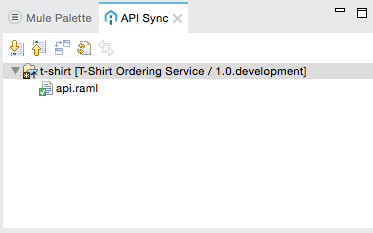
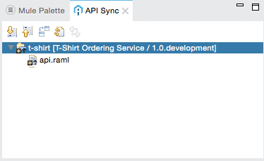
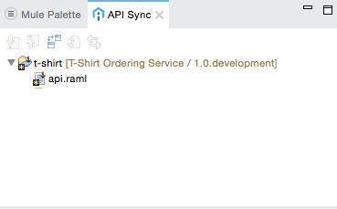
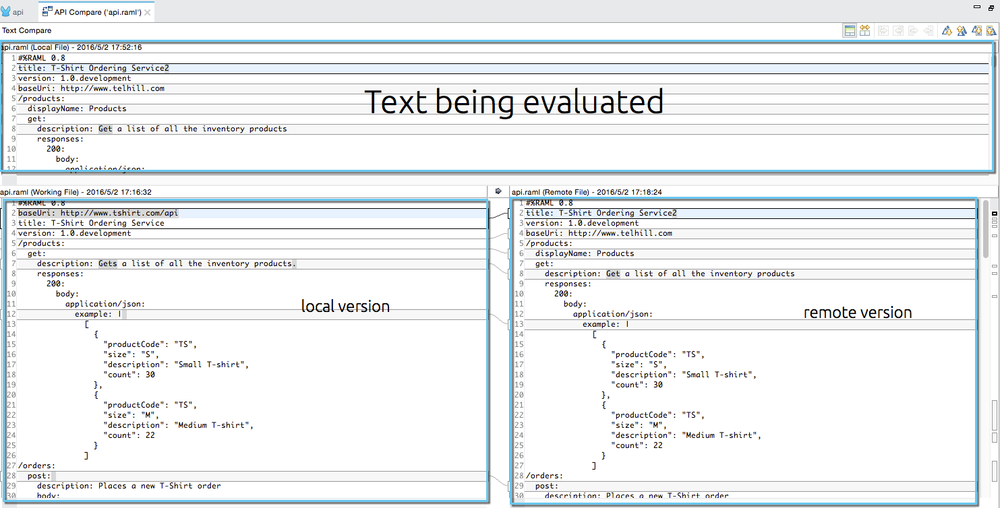
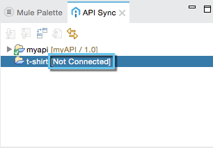

API Sync
Overview
API Sync View is a feature integrated in Anypoint Studio that allows you to seamlessly pull, push and compare your API definition between Anypoint Studio and API Designer.
How to Show It
The API Sync View shows by default with Studio 6.0 and newer next to the Mule Palette:
If you choose to close this view, you can bring it back up by going to Window, Show view, and Other.
Inside the APIKit Views Folder, you can find the API Sync view.
You can also find this view using the Quick Access bar. Locate your quick access bar in the top right of your Studio window, next to your Perspectives, and type API Sync. The view should appear labeled as Views:
Features
When you create a Mule application using an API definition from Anypoint Platform, API Sync holds that reference and compares its local version (the one from Studio) with its remote version (the one in Anypoint Platform).
There are 3 ways this process can go:
-
Both status are synced: The API definition in Studio is the same than the one hosted in Anypoint Platform.
The view shows this API with a green back tip next to the API’s name:
 -
The local version is ahead of the remote version: You’ve made changes to your local application and those changes should be pushed to Anypoint Platform.
API sync displays a black icon with an up arrow, indicating that the change needs to be updated with the platform:
 -
The remote version is ahead of the local version: The API is updated from Anypoint Platform and those updates should be downloaded to Studio before continue working.
API Sync shows a black icon with a down arrow, indicating that the change needs to be downloaded to Studio.

Using API Sync View
Assume that you made a change to your API definition in Studio. API sync immediately indicates that there are local changes that need to be pushed to Anypoint Platform.
-
The New Connection button grants you the possibility to connect a Studio project to a remote API hosted in Anypoint Platform.
After clicking on it, you need to select:
-
A Project to which you want to connect a remote API
-
The credentials of the user whose API you want to sync
-
The API you want to sync to the project you selected earlier
-
-
The Disconnect button disconnects an API from the project to which it was associated.
-
The Download button downloads the last updated version from Anypoint Platform to Anypoint Studio. In this case, since recent changes were made using Studio, downloading the old version overwrites all changes made locally.
-
The Upload button uploads the last updated version from Anypoint Studio to Anypoint Platform. In this case, the local updated version overwrites the old version in Anypoint Platform.
-
the Compare button displays the differences between the local file and the one in Anypoint Platform.
This view, compares the local version of the file with the remote version. You can use the buttons located in the top right corner for this view to navigate through each difference or change.
-
The Refresh all button checks the status of all your API definitions in Studio and all your API definitions in Anypoint Platform. If there are changes in Anypoint Platform, it updates the local version.
If you want to update only one specific project, you can right click it in the API Sync view, and select "refresh". -
The Switch user button allows you to connect to the Anypoint Platform account of the owner of the API.
This feature is useful when having more than one user configured in your Anypoint Studio.
If one user syncs one API, and then another user logs in using his/her Anypoint Platform credentials, the API synced first shows a[Not Connected]label next to its name, indicating that this API does not belong to the current user.
By clicking the Connect to API manager button, Studio prompts for your credentials. If they belong to the owner of the API, it connects to the selected resource. -
The Last updated section displays when was the last time the selected API was updated.
|
API sync feature might not work properly if the RAML file exceeds 4,000 lines of text. |
Sync Your API Definition With Multiple Projects
Another powerful feature of API Sync, is that it allows you to point different Mule projects to the same API Version.
As long as both users have the proper entitlements to access the API in API Manager, they can link the same .raml definition file from their Mule Projects, and push changes to the same remote version.
There are many ways to share an API definition between projects:
-
Both projects can reference the same API Name and Version from their own environments.
-
The project can be exported from your environment and imported into another user’s project.
-
The source code of the project can be uploaded to a VCS (such as GitHub) and cloned by other users that can import it into their own environments. The connection configured to API Manager remains, as long as the user that imported the project has entitlements over the API that’s being referenced, and both Studio interfaces have configured the same credentials for the organization that holds said API.
|
if one user modifies the API definition locally and pushes the changes to the API platform, the second user that’s pointing his project to the same API version, needs to refresh the project to see that the remote version has been updated. API sync does not currently check if the remote version has been updated by another user. |